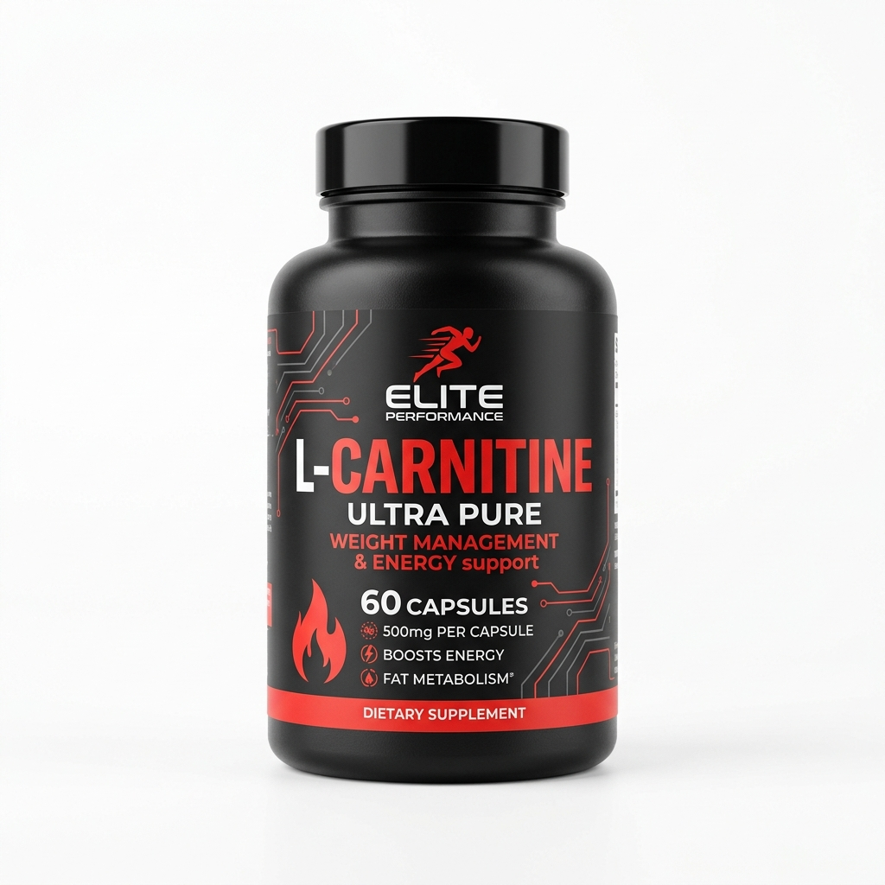

🔥 Cena • Definición Extrema
Cena liviana para definición
Ultra baja en calorías y casi libre de carbohidratos, ideal para inducir la lipólisis nocturna manteniendo la masa muscular intacta con pescado blanco magro y vegetales verdes ricos en fibra y potasio.

Ingredientes por Porción
- 200g de filete de merluza fresca, abadejo o lenguado
- 1 atado (150g) de espárragos verdes frescos
- 6 unidades de tomates cherry
- 1/2 unidad de limón exprimido y rodajas para decorar
- 1 cucharadita (5ml) de aceite de oliva virgen extra
- Condimentos: ajo en polvo, orégano, eneldo fresco y sal rosada del Himalaya
Carbs: 6g
Grasas: 6g
Fibra: 4g
Modo de Preparación
-
1Preparar los vegetales: Lava los espárragos y retira la parte inferior fibrosa del tallo. Corta los tomates cherry al medio.
-
2Sazonar el pescado: Seca el filete de pescado con papel de cocina y condimenta con sal, ajo en polvo, eneldo y el jugo de limón.
-
3Cocción a la plancha u horno: En una plancha o sartén bien caliente con el hilo de aceite de oliva, cocina los espárragos y tomates durante 4 minutos hasta que adquieran un marcado dorado.
-
4Cocinar la merluza: Añade el filete a la plancha y cocina 3 minutos por lado cuidando de no sobrecocinar para mantener su terneza.
-
5Presentación: Sirve de inmediato con rodajas de limón fresco y un toque final de pimienta negra recién molida.
⭐ Suplemento Recomendado para esta Dieta

L-Carnitina 1500mg x60 Cápsulas
El aliado insustituible en dietas de definición. Transporta los ácidos grasos libres hacia las mitocondrias para ser oxidados como energía, acelerando la pérdida de grasa rebelde.
- ✓ Maximiza la tasa de quema calórica y lipólisis
- ✓ Mejora la definición muscular sin pérdida de tono
- ✓ 100% libre de estimulantes para un descanso reparador